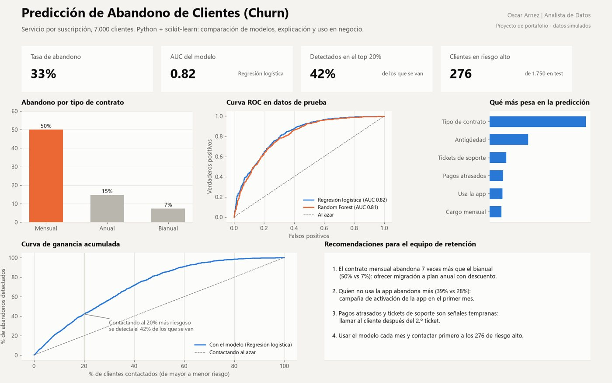

Predicción de abandono de clientes de un servicio por suscripción
Un servicio de internet y TV pierde a uno de cada tres clientes. El equipo de retención no puede llamar a todos, así que necesita una lista ordenada por riesgo y una explicación de qué está detrás de las bajas.

Contexto
El objetivo no era tener el modelo más complejo, sino uno que el equipo pudiera usar cada mes y entender. Por eso comparé un modelo simple con uno más flexible y me quedé con el que rendía igual y se explica mejor.
Datos
7.000 clientes con tipo de contrato, plan, antigüedad, cargo mensual, método de pago, tickets de soporte, pagos atrasados y uso de la app. Datos simulados con efectos definidos de antemano, lo que permite comprobar que el modelo encuentra los factores correctos.
Qué hice
- Preprocesamiento dentro de un Pipeline (One-Hot y estandarización), para que la partición de prueba no influya en el ajuste.
- Partición estratificada 75/25 y validación cruzada de cinco pliegues sobre el entrenamiento.
- Comparación de regresión logística y Random Forest. La logística tuvo AUC 0,807 en validación cruzada contra 0,795 del Random Forest.
- Importancia por permutación sobre la partición de prueba, para saber en qué variables se apoya el modelo.
- Curva de ganancia acumulada y una lista de clientes con probabilidad de baja mayor a 0,6.
Resultados
| Tasa de abandono | 33 % |
|---|---|
| AUC en prueba (logística) | 0,82 |
| AUC en prueba (Random Forest) | 0,81 |
| Bajas detectadas llamando al 20 % más riesgoso | 42 % |
| Abandono con contrato mensual | 50 % |
| Abandono con contrato bianual | 7 % |
Qué recomendaría
- El tipo de contrato es el factor de mayor peso, seguido de la antigüedad, los tickets de soporte, los pagos atrasados y el uso de la app.
- Ofrecer pasar del contrato mensual al anual con un descuento ataca la causa principal.
- El segundo ticket de soporte y el primer pago atrasado sirven como alertas tempranas para llamar al cliente.
Extracto del código
src/modelo.py
def preprocesador():
return ColumnTransformer([
("cat", OneHotEncoder(handle_unknown="ignore"), CATEGORICAS),
("num", StandardScaler(), NUMERICAS),
])
pipe = Pipeline([("prep", preprocesador()),
("clf", LogisticRegression(max_iter=2000))])
cv_auc = cross_val_score(pipe, X_tr, y_tr, cv=cv, scoring="roc_auc")Ver el proyecto completo en GitHub, con instrucciones para ejecutarlo.